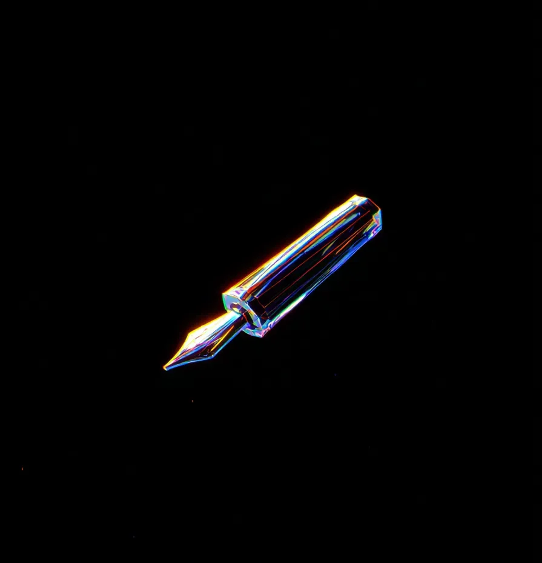

디지털 화면과 픽셀의 시대에도, 황동과 금은 여전히 그들만의 매혹적인 노래를 불렀다. 그녀는 그것을 장인의 시장 노점 바닥에서 발견했는데, 마치 항복을 거부하는 고대 전사처럼 디지털 태블릿과 무선 충전기 사이에 자리잡고 있었다.
[In an age of pixels and screens, brass and gold still sang their siren song. She found it at the bottom of an artisan’s market stall, nestled between digital tablets and wireless chargers like an ancient warrior refusing to surrender.]
만년필의 로즈골드 몸체는 그 홈이 난 표면에서 빛을 받아, 평범한 작업장의 먼지를 다이아몬드 반짝임으로 변화시켰다.
[The fountain pen’s rose gold barrel caught light in its ridged surface, transforming mundane workshop dust into diamond sparkles.]
그것을 들어올리는 것은 마치 지휘자의 지휘봉을 잡는 것 같았다. 생각을 현실로 만들어내기를 기다리는 창조의 도구였다.
[Lifting it felt like grasping a conductor’s baton – an instrument of creation waiting to orchestrate thoughts into being.]
중세 필사본을 장식했을 법한 스크롤 무늬로 장식된 펜촉은 마치 진북을 찾는 나침반 바늘처럼 앞을 가리키고 있었다.
[The nib, decorated with scrollwork that could’ve graced a medieval manuscript, pointed forward like a compass needle seeking true north.]
타이핑된 글꼴의 차가운 완벽함과는 달리, 그것은 인간의 손길이 담긴 아름다운 불완전함을 약속했다.
[Unlike the sterile perfection of typed fonts, it promised the beautiful imperfection of human touch.]
시간은 그것으로 글을 쓸 때 다르게 흘러갔다. 각각의 획은 의도를 필요로 했고, 각각의 단어는 종이 위에서 금속의 우아한 춤을 통해 자신의 자리를 얻어냈다.
[Time moved differently when writing with it. Each stroke required intention, each word earned its place on the page through the deliberate dance of metal on paper.]
잉크는 한밤중의 액체처럼 흘러내려, 지문만큼이나 독특한 흔적을 남겼다. 백스페이스 키도, 삭제 버튼도 없이, 단지 생각이 각 획과 함께 영구적으로 되어가는 정직한 헌신만이 있을 뿐이었다.
[The ink flowed like liquid midnight, leaving behind marks as unique as fingerprints. No backspace key, no delete button – just the honest commitment of thoughts becoming permanent with each stroke.]
실리콘 밸리는 자신들의 혁신과 즉각적인 만족감을 가져도 좋았다.
[Silicon Valley could keep its innovations and instant gratifications.]
여기 있는 것은 현존을 요구하고, 글쓰기라는 행위를 명상으로 바꾸어 놓는 것이었다. 펜의 무게는 그녀를 현재의 순간에 고정시켰고, 종이에 스치는 각각의 소리는 급박한 디지털 세상에 대한 작은 반항이었다.
[Here was something that demanded presence, that turned the act of writing into meditation. The pen’s weight anchored her to the moment, each scratch against paper a small rebellion against the rushing digital world.]
황동과 금은 인내와 영속성이라는 더 오래된 언어로 말했다.
[Brass and gold spoke an older language, one of patience and permanence.]
그녀가 첫 글자를 쓸 때, 펜은 디지털 스타일러스의 수월한 부드러움으로 미끄러지지 않았다.
[When she wrote the first words, the pen didn’t glide with the effortless smoothness of a digital stylus.]
대신, 그것은 마치 빵을 반죽하거나 나무를 조각하는 것처럼 실제의 것들이 가진 만족스러운 저항감을 제공했다.
[Instead, it offered the satisfying resistance of real things, like kneading bread or carving wood.]
글자들은 개성을 가지고 나타났다. 여기저기 잉크가 고인 자리에서는 화려한 장식이, 펜촉이 걸린 자리에서는 살짝 망설임이 보였고, 각각의 불완전함은 그것들을 만든 인간의 손길을 증명하고 있었다.
[The letters emerged with character – here a flourish where the ink pooled, there a slight hesitation where the nib caught – each imperfection a testament to the human hand that shaped them.]